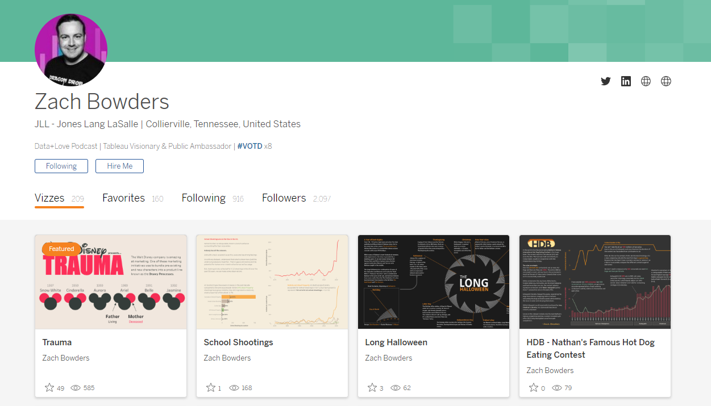
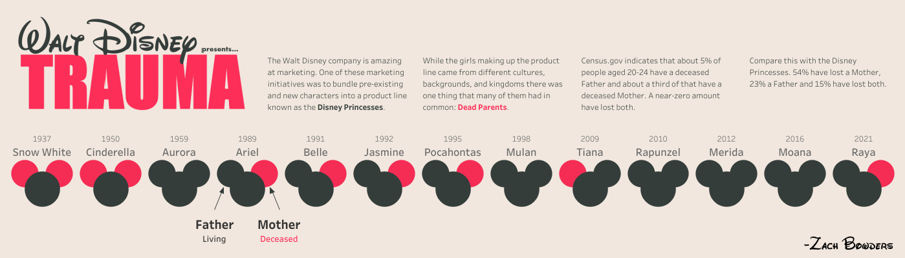
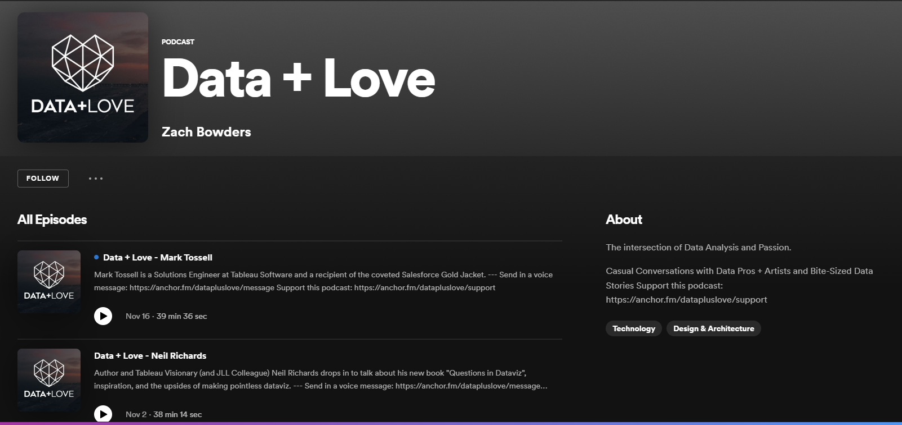
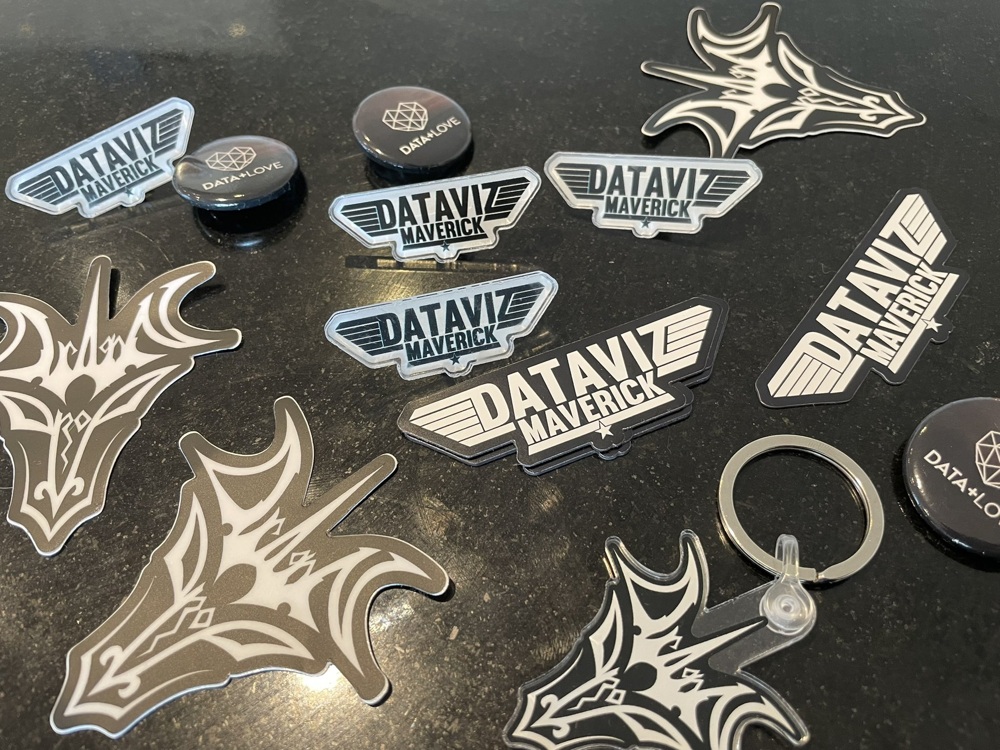
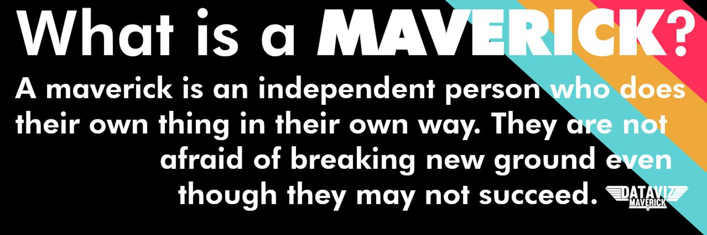
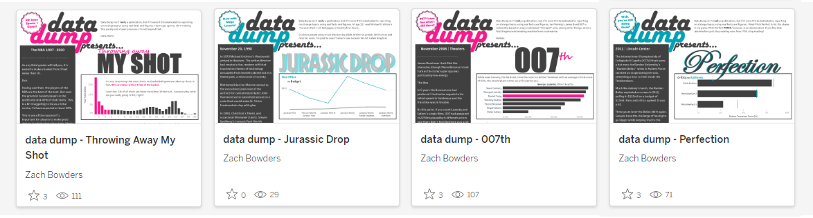
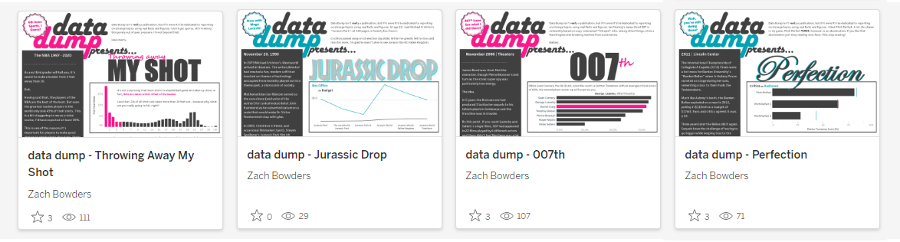
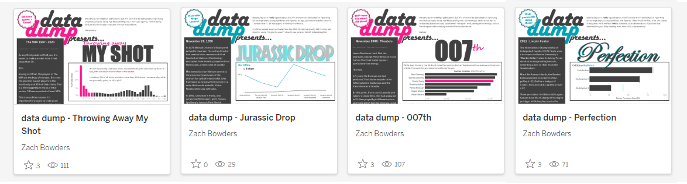

Welcome to the December episode of “What’s Good?”
December is finally upon us, and it’s been two full years of “What’s Good?” interviews.
I’m really pleased to be able to invite my good friend, JLL colleague, and data leader Zach Bowders onto the blog to re-emphasis why the guest blogs even began. The blogs were designed initially to highlight who you are, what you are passionate about and most importantly what makes you unique.
I find Zach has done just that through his early navigation of podcasting, through to his choices of how and why he goes about different dashboard builds. He resembles a lot of the good nature and spirit we see across the whole of the community and for his contributions has been recognised as a Tableau Ambassador and Visionary for multiple years.
CJ: Zach, thanks for joining, I tend to open up the blog in a similar format around how individuals' backgrounds end up working in the data industry. How did navigating that path look like for you, away from IT? Is there anything about working in data that sets it apart from your previous experiences?

ZB: Leading up to actually being in BI I worked a variety of different jobs. From grocery store clerk, 4-wheeler parts warehouse worker, several years at a swimming pool supply store, a year at a bank, nearly a decade in IT as a Dev and Business Analyst, and ultimately BI.
I went to an all-male Catholic School for high school (I’m not even Catholic!) and I had a few good friends who were into the things I was. We made films for school projects, tested new software, upgraded our parents PCs (whether they knew it or not), etc.
I’m 41, so I’m just old enough that I was into tech when that was still something worth being picked on for, and wasn’t an innate part of being a teenager. Films like Hackers and The Matrix were pop-culture flashpoints that made us feel legitimate.
This was also before social media, smart phones, app stores, etc. So it’s not like there was an easy way to connect with others with common interests. You see a kid reading Michael Crichton in your home room? Boom, best friend.
When I went to college I enrolled for a MIS Degree in the Business School (Management Information Systems). At the time I started (2000) dot coms were huge, and there were classmates being hired out of school at Juniors making six figures with wild signing bonuses. By end of 4 years when I was finishing my MIS degree (and a second degree I’d added, Marketing) the bubble had burst, and Silicon Valley wasn’t calling.
I went straight to grad school, got my MBA in 18 months while working my pool store job in the mornings and an assistantship advisor job at the university in the afternoons, ultimately graduated to 6 months of unemployment and eventually got hired at a bank where I worked for a year at about $30k assisting on real estate development loans around the time that industry was collapsing. Was that a run-on sentence? I regret nothing
CJ: Has there been anyone in the community you’d like to especially call out from your career to date in the data industry? What influence have they had?

ZB: Well THAT’S a trap question if ever I heard one! There’s dozens if not hundreds who I could name who inspired me, collaborated with me, appeared on my podcast, or just made the community a great and vibrant place to be. So that’s me dodging the direct question.
Now here’s me answering it anyway. In February 2020 I co-hosted the last-ever meeting of the Memphis TUG with my pals David Kelly and Wendy Brotherton. Steve Wexler and Anna Foard both came into town to present, and it was our single largest turnout (about 40). Earlier that day I got a call from Steve who was taking the opportunity of the visit to see some Memphis sites, “Want to go to Graceland?”
I hadn’t been to Graceland in probably 30 years, and seeing it as an adult was oddly moving. Throughout the mansion and different sub-buildings nearly every area had seating for 10 or more. Elvis didn’t like being alone. One of the biggest stars to ever walk the face of the Earth and he always wanted his friends and family nearby. (He also built out a suite in the house so his parents could move in.)
My other big Elvis thought was in cemetary/crypt portion of the property where Elvis and his family are buried his metal casket topper is emblazoned with a huge TCB and a lightning bolt. “Taking Care of Business”. And honestly, this made me sad. Elvis was a constantly evolving human and artist, and I have no doubt that if he’d gone another 5 to 20 years he’d have evolved several more times, but TCB was the end, and that felt uniquely tragic to me.
After walking the grounds in what turned out to be a pretty emotional afternoon Steve and I sat in a pink Cadillac cut into a diner table drinking coffee alone in a near-empty Graceland Cafe. We talked about careers and life, and I remember telling him that I didn’t know where to go or what to do but I felt unfulfilled and trapped at St. Jude where I’d been for 13 years.
In the next year we kept in touch and I had the good fortune of Steve reaching out to me at key times in my professional career.
Having amazing mentors in your life that you can be candid with, share thoughts, fears, and ambitions, is vital.
CJ: I would assume most would recognise you community wise for your podcast data+love, how did it come about and what inspired the name?

ZB: On my way home from Tableau Conference ‘19 in Las Vegas I was sitting in the airport eating and talking with a friend and reflecting on all of the great people and interesting conversations of the week. Returning home from conference is always a little bittersweet, because you’ve had an amazing summer-camp style experience with peers who share the same passions and pains as you. What if I could have that more often?
Data + Love was conceived of as those conversations happening regularly. It’s why I don’t script things. I want to talk and want to listen to people talk. Let things flow, meander, even if it gets far off topic. That’s the joy of making new friends, and that’s what I wanted to bring to the show.
It’s about Data and what inspires and drives us.
CJ: In terms of leg work to get the podcast up and running. What did this look like from a time and commitment aspect? How have you made your process so sustainable over the years?
ZB: I had a Systems Analysis and Design professor who would say “A system is what you define it to be”. Meaning, if you are unable to define scope, everything is in scope. For the podcast, I knew I had to accomplish a few things in order for it to be “successful” based on my own criteria.
First, it had to be regular. People don’t listen if you are sporadic. It’s also easier to stop doing it if you’re not on a schedule. I chose every two weeks because it seemed reasonable enough I could actually be consistent (haven’t missed one in 3 years) yet often enough that people might listen.
Second, it had to be sustainable. When I was starting I didn’t know how much effort it was to actually cut an episode so I recorded and edited three of them before launch so I’d have some padding. As I’ve worked on the pod nearly 3 years now I’ve gotten faster and learned what’s worth editing and what’s not.
Third, It has to fit in with the rest of my life. If this was going to be too big a time-commitment then I wasn’t going to be able to fit it in. So, before I launched I made sure I knew how to record, edit, and publish my podcast, so that when it came to actual production timelines I knew what I was in for.
CJ: Podcasting isn’t all about having fancy gadgets and good recording software, but also your interactions. As someone that has guests on the podcast, what techniques do you use to help navigate conversation? Do you have any tips for individuals that are perhaps nervous or give shorter answers?
ZB: I made a choice from the beginning that I didn’t want to do interviews. So many podcasts are based around the idea of pre-planned questions, and it puts the other person in a position of feeling like they’re under fire. I wanted to have the conversations I was having at conference, so that meant we just had to talk, which in a way is both easier and harder.
I have to work a LOT harder having conversations for the podcast. I have to be a very active listener, rather than jumping to my next idea, listening carefully and responding ot what people are actually saying (it sounds simple but we rarely actually do this in practice).
Beyond that, if someone is more verbose, I get out of their way. If they’re more shy or nervous I talk more and give them opportunities to respond. Sometimes stuff starts to flow better, sometimes it doesn’t. At the end of the day, I just want to get to know people and help a wider community get to know them in a way that’s just not possible by only seeing their work.
CJ: I love the background research you do for your guest podcasts to be able to draw the best out of the individual. How do you balance content and script ‘agenda’ against active listening? Do you find the flow of conversation is impacted from organic vs pushed questions?
ZB: For the most part I avoid an agenda. Sometimes I have someone on for a specific reason, like our colleague and pal Neil Richards who’s book has come out. But most of the time it’s unstructured.
I used to take some time at the beginning of each podcast to explain to the guest how we’d chat, how I’d introduce them, etc. But I found the first couple minutes of the actual recordings were far more awkward. So now just start talking to someone when the call begins and fade into that conversation for the pod.
It’s like you’re joining a conversation already in progress.
I know, for me, trying to plan questions makes my part of the conversation less organic, because I’m not fully listening, and I’m just looking for ways to get to the things that I thought we should talk about vs the things we’re actually talking about.
CJ: Have you found any other podcasts that have helped you in the way you present? Are there any stand out podcasts or other things that have inspired your set-up and delivery of the podcast episodes?
ZB: From the time I was a little kid I was drawn to spoken word. Fischer Price books for kids on tape, later radio mysteries like The Shadow, ultimately to talk radio, podcasts, etc. All extensions of the same idea, that people like to hear stories.
I listen to a wide variety of podcasts on topics like pop culture, history, comedy, etc. The “fade in” to the episode is taken specifically from The Joe Rogan Experience.
For me, I didn’t want to try to do the same thing as anybody else, but at the same time, there’s only so many ways you can talk. I want Data + Love to be all about the guest. From the beginning I knew I didn’t want to chase data celebrities (there’s enough shows about people everyone already knows). As a result, I know that means there’s plenty of episodes people may not listen to because they don’t recognize the name.
CJ: So let’s talk data mavericks. I’m biased as top gun is my favourite film. But I loved your piece on data mavericks. Not just for film references, but also some of the sentiment around the different style of leaders. It can be read here.

I’d love to hear your thoughts on whether everyone should aim to be more maverick-like or if you see an ideal balanced state of minds? Who can be a data maverick in your eyes? A manager? An evangelist? An analyst?
ZB: It’s a good question. I think the idea of being a Data Maverick is about being a leader as an individual contributor. Not to diminish people in leadership roles, of course.
I used to have a CEO who talked about “leading from every role”. It sounded great on paper, but there wasn’t really a concrete example of what that meant or what it looked like.
Top Gun: Maverick kind of captured my imagination and reframed that idea for me.
In the film we find a Pete “Maverick” Mitchell who hasn’t made the most of his skills. He’s both declined opportunities to move into a more senior role as an Admiral, Senator, etc and he’s also failed to create more Mavericks. He flies, but it’s mostly for himself, and his incredible talent is being squandered.
Ice Man, now an Admiral, calls Maverick back to Top Gun to teach the next generation of pilots how to fly a seemingly impossible mission.
While the call to action came from leadership, Maverick is teaching as a peer of the pilots, albeit one with more experience. And he has creative solutions to solve the mission (or, as we’d see it, a project) that someone several layers above him may not have.
I think it can be a state of mind that anyone can have, but I see it someone in the middle. What are you doing to pass on your skills and make more Mavericks?
I want to dispell a notion. This isn’t about “going rogue”. Leadership either makes rooms for Mavericks to operate, apply their unique expertise, and make (for lack of a better word) disciples, or it doesn’t. But it’s something that’s difficult to accomplish unless you have Ice Man calling you to action.
CJ: When we last spoke you mentioned the concept of leading from the middle? What does this mean and what sentiment can analysts take away from this idea? Does this tie into your thoughts around giving up flying?

ZB: Leading from the middle looks different for everyone. In Top Gun, Maverick had unique skills and life experiences that made him uniquely qualified to help inspire the younger pilots, but in order to do so he couldn’t follow the book exactly.
For me, being a Maverick is often rapidly trying new ideas and failing, trying to push standards and ideas forward through nudges. I also make a point of trying to be a sounding board for others, troubleshooting issues and proposing alternatives.
It won’t be the same for everyone. We’re each unique with our own distinct personalities, skills, and experiences.
Soft Skills, are one of my secret weapons to the point where I’ve been jokingly dubbed “Soft Skils Zach”. If you are good with people / processes / communication that can be a total game changer. I was once put on a “problem account” where the account team was incredibly needy, messaging constantly throughout the day. It isn’t the kind of problem you can viz your way out of.
I came in, and opened the lines of communication. Asked when they’d like to have regular meetings, how often they wanted email updates. Included them in working sessions, asked for feedback. Made OUR dashboards rather than MY dashboards.
In the end, they renewed with us for an extended period and I ended up delivering 15 dashboards rather than the original 3 they wanted.
CJ: What thoughts do you have around how to jump into new challenges? Ideas and activities? For those that want to make the leap of faith either into a new data role, start a new community initiative, take part in a new data challenge, what considerations do you have?
I’m a lot less hesitant now than I was when I was younger. Most of the adult growth, both personally and professionally I’ve had, has been in the past 5 years. When I first discovered the Tableau Datafam and wanted to get involved, I was kind of trying to do what I saw everyone else doing. Doing weekly exercises, trying to make cool stuff in other people’s styles, etc.
At a certain point I thought “Why don’t I just try something different?” I did stuff in my own style, no topics I wanted, in the formats I chose…and the world didn’t end. I said “What if I made a podcast?” and I did it. The big shift in understanding for me was that there’s no REAL gatekeepers to your new idea, you just have to DO it.
The single biggest thing keeping you from what you’d like to be doing is your own will to get up and keep trying. Tenacity and grit, while not bulletproof concepts, will get you a lot further than raw talent.
Back to the question though, when considering jumping into something new, I first size it up a bit and ask “Is this something I REALLY want to do, or is it something I feel like I SHOULD do”. Sometimes you do something because you should. It’ll help you grow, help someone else, etc. Other times it’s something you’d enjoy. It’s good to have some balance between the two, if you’re always filling one bucket and not the other you’ll be kind of uneven as a person.
Another consideration is “CAN I do this”? Both in the sense of “is this in my skillset/wheelhouse or can I learn it?” and “how does this fit into my life?” I’ve had opportunities that are right up my alley that would have been significant disruptors to my family, and I choose not to pursue those.
I’ve found that if you can’t envision/create a version of that thing you’d like to do that’s sustainable and fits into your life then you’re likely not to stick with it very long.
CJ: Speaking of delivering new ideas. I was really pleased to see the start of ‘data dumps’. What was your intention with creating these mini projects on Tableau Public? How do you balance concepts of design, analytics and time into this project?

One of my creative precepts for data projects is the idea of artificial constraints on myself. As a habit, I don’t spend more than 3 hours on a public data viz, both because my attention begins to wane and I know (from past experience drawing) that if I give myself unlimited time I’ll just never feel satisfied and never release it.
Data Dumps are short viz stories with text blocks and visualizations I came up with to express small ideas quickly without the need to reinvent the format each time. Presented like a zine, they have just enough space for 2-3 visuals and supporting text.
For my first round I decided to explore the “Boston Molassacre”, which was a real world Molassas spill in 1919 where 2.3 million gallons of molasses flooded the streets of Boston. I knew I wanted to give context to the scale of that, so I discussed the details of what happened and had visuals comparing things we’re comfortable with (a backyard pool, the size of a 2 story house, your running speed) against the various aspects of the molasses wave.
The first Data Dump was the most work, because I had to establish a template that gave adequate room to have a title, descriptive text, and room for a couple charts, but once I had it hammered out, it became a tool for me to rapidly deploy small ideas fast.
CJ: What are you most looking forward to as we roll into 2023 from both a personal and community perspective?
I’m involved in a lot of new ventures that will be seeing fruit this year. I’ll be teaching for a second time with Emory University’s Women in Technology program, which helps elevate single mothers by teaching them data skills. I also am in the process of finding another new side-gig for teaching that the Datafam is very familiar with, but I’m hesitant to reveal until I’ve actually made something.
In general, I’m feeling positive. Tableau’s new features look promising and the community may be smaller than it’s been in recent history but the level of engagement feels enthusiastic and high.
Data + Love is finishing its 3rd season, and I’ll admit the beginning of this year was a bit of a struggle for me but I’ve rediscovered the love by having exciting conversations with new and different people.
Do what you love. It’ll still be work, but it’ll be satisfying work.
CJ Round Up:
I really enjoyed the opportunity to sit down with Zach and hear his thoughts around community, finding your own interests and his exploration of different themes and topics.
I am so pleased to see Data + Love continually there to inspire and engage new conversation. It even came up on my Spotify Wrapped this year!
Whether you want to get into podcasting, carve time out for quick analytical stories, or find love through the blend of films with data - what this conversation re-iterated to me is why it all began. Doing things that make you happy, and resemble you as a person.
Happy Holidays all - Logging Off for one final time in 2022,
CJ
 I’m a lot less hesitant now than I was when I was younger. Most of the adult growth, both personally and professionally I’ve had, has been in the past 5 years. When I first discovered the Tableau Datafam and wanted to get involved, I was kind of trying to do what I saw everyone else doing. Doing weekly exercises, trying to make cool stuff in other people’s styles, etc.
At a certain point I thought “Why don’t I just try something different?” I did stuff in my own style, no topics I wanted, in the formats I chose…and the world didn’t end. I said “What if I made a podcast?” and I did it. The big shift in understanding for me was that there’s no REAL gatekeepers to your new idea, you just have to DO it.
The single biggest thing keeping you from what you’d like to be doing is your own will to get up and keep trying. Tenacity and grit, while not bulletproof concepts, will get you a lot further than raw talent.
Back to the question though, when considering jumping into something new, I first size it up a bit and ask “Is this something I REALLY want to do, or is it something I feel like I SHOULD do”. Sometimes you do something because you should. It’ll help you grow, help someone else, etc. Other times it’s something you’d enjoy. It’s good to have some balance between the two, if you’re always filling one bucket and not the other you’ll be kind of uneven as a person.
Another consideration is “CAN I do this”? Both in the sense of “is this in my skillset/wheelhouse or can I learn it?” and “how does this fit into my life?” I’ve had opportunities that are right up my alley that would have been significant disruptors to my family, and I choose not to pursue those.
I’ve found that if you can’t envision/create a version of that thing you’d like to do that’s sustainable and fits into your life then you’re likely not to stick with it very long.
CJ: Speaking of delivering new ideas. I was really pleased to see the start of ‘data dumps’. What was your intention with creating these mini projects on Tableau Public? How do you balance concepts of design, analytics and time into this project?

One of my creative precepts for data projects is the idea of artificial constraints on myself. As a habit, I don’t spend more than 3 hours on a public data viz, both because my attention begins to wane and I know (from past experience drawing) that if I give myself unlimited time I’ll just never feel satisfied and never release it.
Data Dumps are short viz stories with text blocks and visualizations I came up with to express small ideas quickly without the need to reinvent the format each time. Presented like a zine, they have just enough space for 2-3 visuals and supporting text.
For my first round I decided to explore the “Boston Molassacre”, which was a real world Molassas spill in 1919 where 2.3 million gallons of molasses flooded the streets of Boston. I knew I wanted to give context to the scale of that, so I discussed the details of what happened and had visuals comparing things we’re comfortable with (a backyard pool, the size of a 2 story house, your running speed) against the various aspects of the molasses wave.
The first Data Dump was the most work, because I had to establish a template that gave adequate room to have a title, descriptive text, and room for a couple charts, but once I had it hammered out, it became a tool for me to rapidly deploy small ideas fast.
CJ: What are you most looking forward to as we roll into 2023 from both a personal and community perspective?
I’m involved in a lot of new ventures that will be seeing fruit this year. I’ll be teaching for a second time with Emory University’s Women in Technology program, which helps elevate single mothers by teaching them data skills. I also am in the process of finding another new side-gig for teaching that the Datafam is very familiar with, but I’m hesitant to reveal until I’ve actually made something.
In general, I’m feeling positive. Tableau’s new features look promising and the community may be smaller than it’s been in recent history but the level of engagement feels enthusiastic and high.
Data + Love is finishing its 3rd season, and I’ll admit the beginning of this year was a bit of a struggle for me but I’ve rediscovered the love by having exciting conversations with new and different people.
Do what you love. It’ll still be work, but it’ll be satisfying work.
CJ Round Up:
I really enjoyed the opportunity to sit down with Zach and hear his thoughts around community, finding your own interests and his exploration of different themes and topics.
I am so pleased to see Data + Love continually there to inspire and engage new conversation. It even came up on my Spotify Wrapped this year!
Whether you want to get into podcasting, carve time out for quick analytical stories, or find love through the blend of films with data - what this conversation re-iterated to me is why it all began. Doing things that make you happy, and resemble you as a person.
Happy Holidays all - Logging Off for one final time in 2022,
CJ
I’m a lot less hesitant now than I was when I was younger. Most of the adult growth, both personally and professionally I’ve had, has been in the past 5 years. When I first discovered the Tableau Datafam and wanted to get involved, I was kind of trying to do what I saw everyone else doing. Doing weekly exercises, trying to make cool stuff in other people’s styles, etc.
At a certain point I thought “Why don’t I just try something different?” I did stuff in my own style, no topics I wanted, in the formats I chose…and the world didn’t end. I said “What if I made a podcast?” and I did it. The big shift in understanding for me was that there’s no REAL gatekeepers to your new idea, you just have to DO it.
The single biggest thing keeping you from what you’d like to be doing is your own will to get up and keep trying. Tenacity and grit, while not bulletproof concepts, will get you a lot further than raw talent.
Back to the question though, when considering jumping into something new, I first size it up a bit and ask “Is this something I REALLY want to do, or is it something I feel like I SHOULD do”. Sometimes you do something because you should. It’ll help you grow, help someone else, etc. Other times it’s something you’d enjoy. It’s good to have some balance between the two, if you’re always filling one bucket and not the other you’ll be kind of uneven as a person.
Another consideration is “CAN I do this”? Both in the sense of “is this in my skillset/wheelhouse or can I learn it?” and “how does this fit into my life?” I’ve had opportunities that are right up my alley that would have been significant disruptors to my family, and I choose not to pursue those.
I’ve found that if you can’t envision/create a version of that thing you’d like to do that’s sustainable and fits into your life then you’re likely not to stick with it very long.
CJ: Speaking of delivering new ideas. I was really pleased to see the start of ‘data dumps’. What was your intention with creating these mini projects on Tableau Public? How do you balance concepts of design, analytics and time into this project?

One of my creative precepts for data projects is the idea of artificial constraints on myself. As a habit, I don’t spend more than 3 hours on a public data viz, both because my attention begins to wane and I know (from past experience drawing) that if I give myself unlimited time I’ll just never feel satisfied and never release it.
Data Dumps are short viz stories with text blocks and visualizations I came up with to express small ideas quickly without the need to reinvent the format each time. Presented like a zine, they have just enough space for 2-3 visuals and supporting text.
For my first round I decided to explore the “Boston Molassacre”, which was a real world Molassas spill in 1919 where 2.3 million gallons of molasses flooded the streets of Boston. I knew I wanted to give context to the scale of that, so I discussed the details of what happened and had visuals comparing things we’re comfortable with (a backyard pool, the size of a 2 story house, your running speed) against the various aspects of the molasses wave.
The first Data Dump was the most work, because I had to establish a template that gave adequate room to have a title, descriptive text, and room for a couple charts, but once I had it hammered out, it became a tool for me to rapidly deploy small ideas fast.
CJ: What are you most looking forward to as we roll into 2023 from both a personal and community perspective?
I’m involved in a lot of new ventures that will be seeing fruit this year. I’ll be teaching for a second time with Emory University’s Women in Technology program, which helps elevate single mothers by teaching them data skills. I also am in the process of finding another new side-gig for teaching that the Datafam is very familiar with, but I’m hesitant to reveal until I’ve actually made something.
In general, I’m feeling positive. Tableau’s new features look promising and the community may be smaller than it’s been in recent history but the level of engagement feels enthusiastic and high.
Data + Love is finishing its 3rd season, and I’ll admit the beginning of this year was a bit of a struggle for me but I’ve rediscovered the love by having exciting conversations with new and different people.
Do what you love. It’ll still be work, but it’ll be satisfying work.
CJ Round Up:
I really enjoyed the opportunity to sit down with Zach and hear his thoughts around community, finding your own interests and his exploration of different themes and topics.
I am so pleased to see Data + Love continually there to inspire and engage new conversation. It even came up on my Spotify Wrapped this year!
Whether you want to get into podcasting, carve time out for quick analytical stories, or find love through the blend of films with data - what this conversation re-iterated to me is why it all began. Doing things that make you happy, and resemble you as a person.
Happy Holidays all - Logging Off for one final time in 2022,
CJ